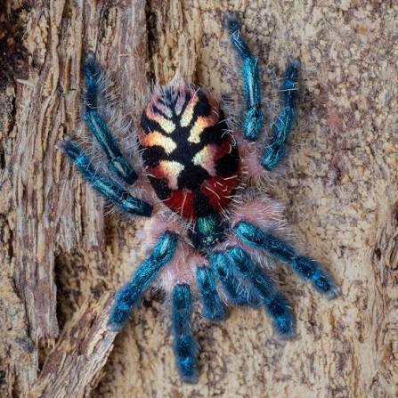
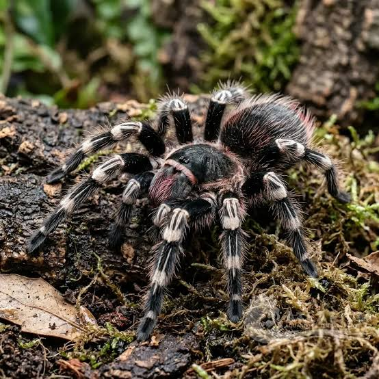
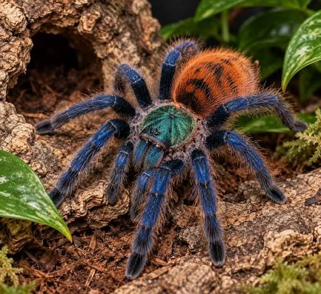
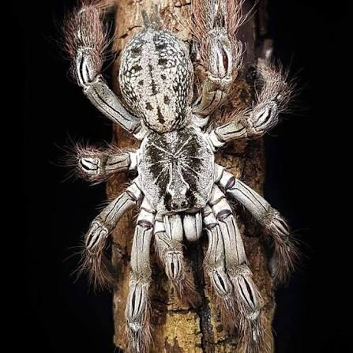
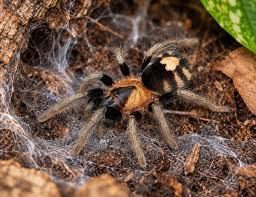
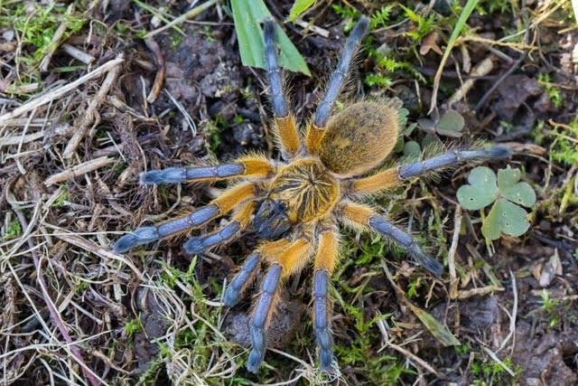
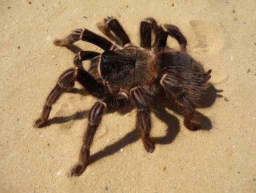
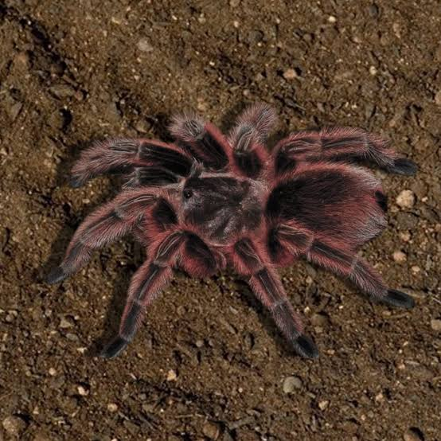
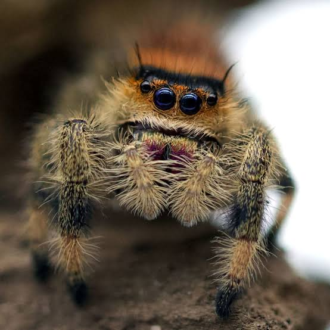

Davus pentaloris
La Davus pentaloris è conosciuta per il suo pattern tigrato sull’addome e il carapace dai toni rossastri, che la rendono una specie molto attraente per gli allevatori.

Caribena versicolor
È famosa per il suo magnifico colore blu da giovane, che evolve in verde brillante e sfumature rosate da adulta.

Typhochlaena seladonia
La Typhochlaena seladonia è l'unica migale al mondo conosciuta per costruire una "botola" (trapdoor) sugli alberi.

Pamphobeteus sp. machala
Pamphobeteus machala è apprezzata per la sua impressionante dimensione e la sua colorazione scura con riflessi iridescenti, che la rendono una specie di grande interesse per gli appassionati.

Acanthoscurria geniculata
La Acanthoscurria geniculata è una delle tarantole più impressionanti grazie alle sue grandi dimensioni e al caratteristico pattern bianco e nero sulle zampe.

Chromatopelma cyaneopubescens
Famosa per i suoi colori vivaci e per la quantità di ragnatele che crea. È una delle tarantole più spettacolari e apprezzate dagli allevatori.

Heteroscodra maculata
È famosa per la sua colorazione bianco-grigia marmorizzata e per la complessa struttura di tele che crea nel terrario.

Cyriocosmus elegans
La Cyriocosmus elegans è famosa per il suo pattern unico: un triangolo dorato sul carapace e una banda nera sull’addome che la rendono facilmente riconoscibile.

Harpactira pulchripes
Una delle tarantole più spettacolari grazie ai colori vibranti: zampe dorate e carapace dai riflessi metallici.

Lasiodora parahybana
Una delle tarantole più grandi al mondo e cresce rapidamente, rendendola molto popolare tra gli appassionati.

Grammostola rosea
La Grammostola rosea è tra le tarantole più popolari in cattività grazie alla sua docilità e al basso mantenimento richiesto.

Phidipus regius
Una delle specie più grandi, colorate e docili della famiglia dei ragni saltatori.